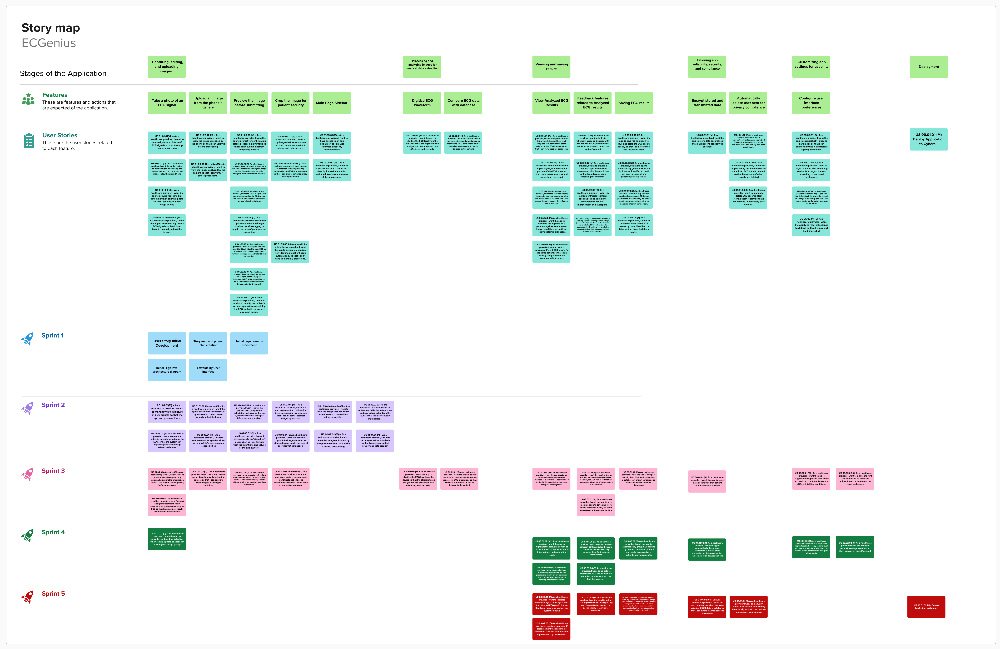

Project Management
Story board

Project Plan
Sprint 1
Due: Feb 2, 2025
Tasks
| Task | Related US | Assigned To | Due Date |
|---|---|---|---|
| Storymap | Brandon, Pooja, Ricardo | Feb 1 | |
| Project Plan | Brandon, Pooja, Ricardo | Feb 1 | |
| Architecture Diagram | Mohamed | Feb 1 | |
| User Stories | Brandon, Pooja, Ricardo | Feb 1 | |
| Canvas | All Members | Feb 1 | |
| Similar Products | Abdullah | Feb 1 | |
| Figma | Hassan | Feb 1 | |
| Setting Up Repository | Mohamed | Feb 1 |
Sprint 2
Due: Feb 16, 2025
User Stories
| User Story ID | Description | Story Points |
|---|---|---|
| US 01.01.01 (M) | As a healthcare provider, I want to manually take a picture of ECG signals so that the app can process them. | 3 |
| US 01.01.01 Alternative (M) | As a healthcare provider, I want the app to automatically detect ECG signals so that I don’t have to manually adjust the image. | 5 |
| US 01.03.02 (M) | As a healthcare provider, I want to enter the patient’s sex (M/F) before submitting the image so that the system can consider biological differences. | 1 |
| US 01.03.01 (M) | As a healthcare provider, I want the app to prompt for confirmation before processing my image so that I don’t submit incorrect images by mistake. | 1 |
| US 01.03.01 Alternative (M) | As a healthcare provider, I want to view the image captured by the camera so that I can verify it before proceeding. | 1 |
| US 01.03.07 (M) | As the healthcare provider, I want an option to modify the patient’s sex and age before submitting the ECG so that I can correct any input errors. | 1 |
| US 01.03.03 (M) | As a healthcare provider, I want to enter the patient’s age when capturing the ECG so that the system can adjust its prediction for age variations. | 1 |
| US 01.05.01 (M) | As a healthcare provider, I want to have access to an app disclaimer, so I am well informed about my responsibilities. | 1 |
| US 01.05.02 (S) | As a healthcare provider, I want to have access to an “About Us” description so I am familiar with the app's values and intentions. | 1 |
| US 01.03.04 (C) | As a healthcare provider, I want the option to upload images as jpeg or png in case of poor internet connection. | 3 |
| US 01.02.01 (M) | As a healthcare provider, I want to view the uploaded image so that I can verify it before proceeding. | 2 |
| US 01.04.01 (M) | As a healthcare provider, I want to crop images before submission to ensure patient privacy and data security. | 3 |
Tasks
| Task | Related US | Assigned To | Due Date |
|---|---|---|---|
| Initial Website Layout | Hassan, Pooja | Feb 7 | |
| Upload Images | US 01.01.01 | Hassan | Feb 9 |
| Upload Biological Sex | US 01.03.02 | Pooja | Feb 9 |
| Upload Age | US 01.03.03 | Pooja | Feb 9 |
| Analyze ECG Images | Abdullah | Feb 16 | |
| Set Up Flask Backend | Mohamed | Feb 10 | |
| Set Up Initial Database | Ricardo | Feb 10 | |
| Create "About Us" Page | US 01.05.02 | Brandon | Feb 10 |
| Add Disclaimer | US 01.05.01 | Rithwik | Feb 10 |
| Add Crop Image Feature | US 01.04.01 | Ricardo | Feb 14 |
Sprint 3
Due: Mar 9, 2025
User Stories
| User Story ID | Description | Story Points |
|---|---|---|
| US 01.04.01 Alternative (C) | As a healthcare provider, I want the app to automatically crop out personally identifiable information to ensure patient privacy. | 5 |
| US 01.01.02 (C) | As a healthcare provider, I want the option to turn on my flashlight while using the camera for better image capture in low-light conditions. | 2 |
| US 01.03.05 (S) | As a healthcare provider, I want to assign a free-text identifier (like initials) to each ECG for patient tracking without storing identifiable info. | 3 |
| US 01.03.05 Alternative (C) | As a healthcare provider, I want the app to generate a random non-identifiable patient code automatically. | 2 |
| US 01.03.06 (C) | As a healthcare provider, I want to enter a free-text label (“pre-treatment”, “post-treatment”, etc.) to compare results. | 3 |
| US 02.01.01 (M) | As a healthcare provider, I want the app to digitize the ECG locally for secure and effective data analysis. | 5 |
| US 02.02.01 (C) | As a healthcare provider, I want the system to use the entered sex and age data for more accurate ECG predictions. | 3 |
| US 03.01.01 (M) | As a healthcare provider, I want the app to return possible conditions with confidence scores for the uploaded ECG. | 2 |
| US 03.01.03 (S) | As a healthcare provider, I want the result to display the gender and age associated with the analyzed ECG. | 2 |
| US 03.01.04 (M) | As a healthcare provider, I want the app to compare digitized ECGs against a known conditions database for diagnosis. | 5 |
| US 03.03.01 (M) | As a healthcare provider, I want the app to allow saving ECG results locally for future reference. | 2 |
| US 04.01.01 (M) | As a healthcare provider, I want the app to store data securely to ensure patient confidentiality. | 3 |
| US 05.02.01 (C) | As a healthcare provider, I want the app to support both light and dark mode for comfortable use. | 2 |
| US 05.02.02 (C) | As a healthcare provider, I want to adjust the font size in the app according to my visual preference. | 2 |
Estimated Sprint Velocity: ...
Tasks
Sprint 3 tasks will be added during Sprint 2.
Sprint 4
Due: Mar 23, 2025
User Stories
| User Story ID | Description | Story Points |
|---|---|---|
| US 01.01.03 (C) | As a healthcare provider, I want the app to provide real-time blur detection when taking a photo to ensure good quality. | 5 |
| US 03.01.02 (M) | As a healthcare provider, I want the app to highlight the relevant portion of the ECG wave for better interpretation. | 3 |
| US 03.01.05 (M) | As a healthcare provider, I want to switch between different ECG results for the same patient to compare effectiveness. | 2 |
| US 03.03.02 (S) | As a healthcare provider, I want the app to group ECG results by free-text identifier for easy access. | 3 |
| US 03.03.03 (S) | As a healthcare provider, I want the app to store processed ECGs locally for offline retrieval. | 2 |
| US 03.03.04 (S) | As a healthcare provider, I want to filter saved ECG results by date, identifier, or label for quick retrieval. | 2 |
| US 04.01.02 (M) | As a healthcare provider, I want the app to delete submitted ECG data post-processing to comply with regulations. | 1 |
| US 05.02.03 (C) | As a healthcare provider, I want haptic feedback for key actions like “image is too blurry” for tactile confirmation. | 3 |
| US 05.02.04 (C) | As a healthcare provider, I want to reset all settings to default if needed. | 2 |
Estimated Sprint Velocity: ...
Tasks
Sprint 4 tasks will be added during Sprint 3.
Sprint 5
Due: Apr 1, 2025
User Stories
| User Story ID | Description | Story Points |
|---|---|---|
| US 03.02.01 (M) | As a healthcare provider, I want to indicate agreement or disagreement with ECG predictions to validate results. | 1 |
| US 03.02.02 (M) | As a healthcare provider, I want to provide a short text explanation when disagreeing to document reasoning. | 1 |
| US 03.02.04 (M) | As a healthcare provider, I want my feedback stored with ECG results to improve system accuracy. | 5 |
| US 03.02.03 (C) | As a healthcare provider, I want my feedback considered for system improvement by developers. | 5 |
| US 04.01.03 (C or W) | As a healthcare provider, I want a notification when ECG data is deleted for awareness. | 1 |
| US 04.01.04 (S) | As a healthcare provider, I want to manually delete stored ECG records for data management. | 1 |
| US 06.01.01 (M) | Deploy application to Cybera. | 5 |
Estimated Sprint Velocity: ...
Tasks
Sprint 5 tasks will be added during Sprint 4.